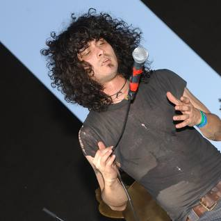

The Mars Volta is my favorite band. Their career spans over 20 years, from the early days in At The Drive-In, to the latest self-titled release in 2022. The Mars Volta has released genre-defying (and defining) complex and rich music consistently throughout their storied musical exploration.